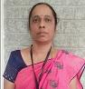

The Indian Society for Technical Education (ISTE) is the leading National
Professional non-profit making Society for the Technical Education System in
our country with the motto of Career Development of Teachers and Personality Development of Students and overall development of our Technical Education System. Being the only national organisation of educators in the field of Engineering and Technology, ISTE effectively contributes in various missions of the Union Government. The strength of ISTE is the strong base it has in technical education institutions in the country.
ISTE has an Executive Council at National level. It has active membership of more than 128500 technical
teachers, 535000 student members, more than 2740 institutional members (including IITs, IISc., NITs and
other leading technical institutions), 1414 faculty chapters and 1505 students’ chapters at National
level and 19 Sections at State Level .
The major objective of the ISTE is to provide quality training programmes to teachers and administrators
of technical institutions to update their knowledge and skills in their fields of activity and to assist
and contribute in the production and development of top quality professional engineers and technicians
needed by the industry and other organisations.
It organizes an annual convention for faculty and students separately every year where a large number of
technocrats, technical teachers, policy makers, experts from the industry etc. participate and interact.
Every year a National Seminar with a specific theme with respect to the latest development in the field
of Science and Technology and societal problems is being arranged during the Annual convention and leading
luminaries of technical education are invited to deliver special lectures and delegates will present
research papers. ISTE is actively involved in many activities conducted by All India Council for
Technical Education New Delhi (AICTE) and National Board of Accreditation New Delhi (NBA). ISTE is
having collaboration and MoUs with government organsations and various Universities for the promotion
of technical education system in the country.
Indian Society for Technical Education is a professional organization of engineering educators and educational administrators. It is a society registered under the societies Registration Act XXI of 1860. The principle objective of ISTE is to advance the cause of education in general and all its functions which pertain to engineering and also to serve as common agency for simulating and guiding its members to formulate strategies for development of technical education and research. ISTE had been engaged in a variety of programmes and actions leading to the upgradation and modernization of present day curriculum, faculty and educational infrastructure so as to make the technical education in India comparable with that in the advanced countries. PES College of Engineering, Mandya became Institutional Member of ISTE in the year 1986. ISTE-PESCE Chapter, which is a branch of Indian Society for Technical Education, New Delhi, took birth in the PES College of Engineering campus in the year 1989. Almost all the staff members of the institution are life members of ISTE. The members are benefited through attending short term courses and other activities of the ISTE. Since the beginning of the chapter, many activities have been conducted in the institution for the benefit of staff members and students. A few Programs was also conducted for the family members like short tour, get together, games to spouses and children etc.,
ISTE PESCE CHAPTER 2023 Report
-
ISTE PESCE CHAPTER 2021 Report
ISTE PESCE CHAPTER 2020 Report
ISTE PESCE CHAPTER 2019 Report
ISTE PESCE CHAPTER 2018 Report
Contact us:
|  | Dr. Veena M N Ph.D. President, ISTE-PESCE, Professor, Dept. of MCA Mob: +91 98451 42764 |
Dr. Nayaka S R Ph.D. Secretary / Tresurer, ISTE-PESCE, Asst. Professor, Dept. of Mathematics Mob. No : +91 96116 00098 |